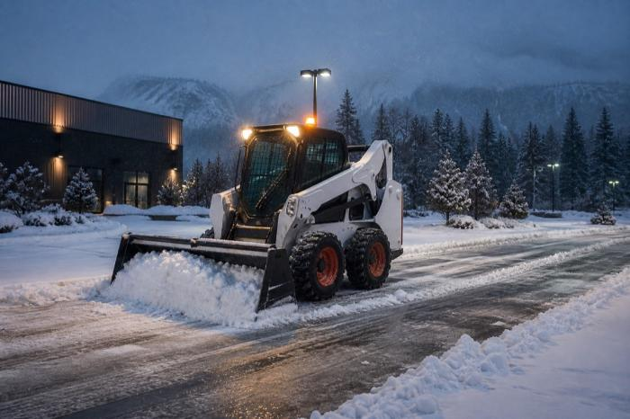

Skid steer snow blowers, plow blades, and salt/sand spreaders — outfitted, sold, and serviced by Kong Tractors for Vancouver and Metro Vancouver ahead of winter.

Service illustration — equipment and attachment availability are confirmed for each project.
Every attachment Kong Tractors fits for Metro Vancouver is built to pair with our skid steers, backhoes, and front loaders for fast, reliable clearing.
High-throughput snow blower attachments for driveways, lots, and municipal contracts around Vancouver.
Front-mounted pushers and plow blades for quick clearing of commercial lots and strata properties in Vancouver.
Tow-behind and mounted spreaders to keep Vancouver driveways, lots, and walkways safe after the plow passes.
From single properties to standing winter contracts, Kong Tractors outfits and services the equipment behind Vancouver's snow response.
Reliable clearing equipment for shared driveways, parking areas, and walkways.
Snow pushers and spreaders sized for retail, office, and industrial lots around Vancouver.
Keep long driveways and yard access clear through the Metro Vancouver winter.
Fast attachment repair and compatible parts when equipment needs to be back out clearing snow.
Yes — Kong Tractors sells and fits skid steer snow blowers, plow blades, and salt/sand spreaders for customers throughout Vancouver and Metro Vancouver, from our Abbotsford, BC headquarters.
Kong Tractors' service team prioritizes storm-season repairs and keeps parts availability confirmed per enquiry so snow equipment near Vancouver can get back to work quickly.
Strata and commercial lots in Vancouver typically use plow blades and spreaders for fast clearing and ice control, while larger properties and acreages often add a skid steer snow blower for high-volume snowfall.
Kong Tractors outfits the equipment behind Vancouver's winter response — PlowWow runs the actual snow removal service, with 24/7 dispatch and seasonal contracts across the Lower Mainland.